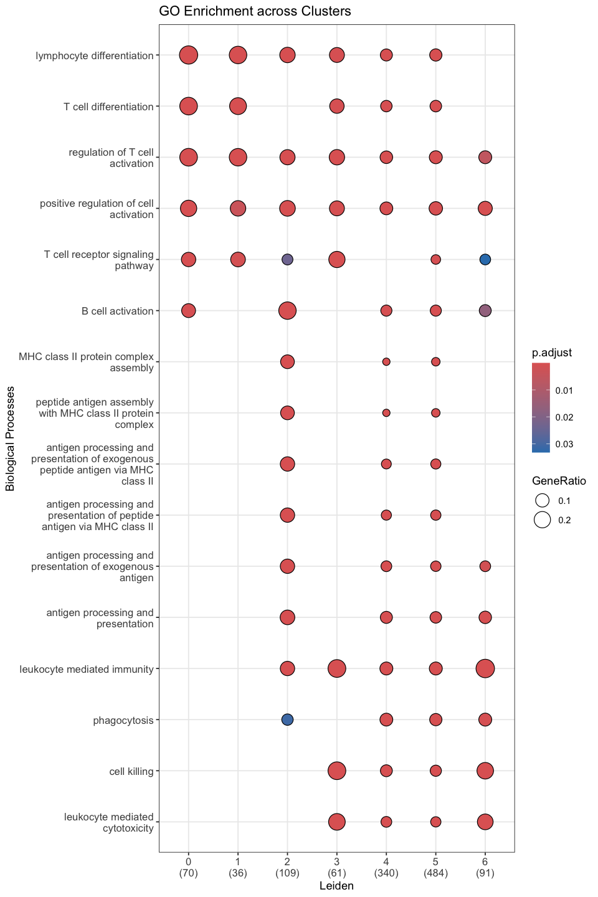
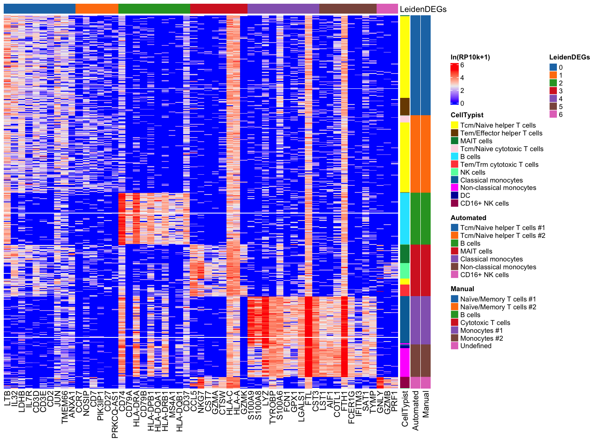

02: GO Analysis with R
NOTE: Run code in 01_preprocessing_with_python.ipynb first to generate essential data files
Manual Annotation
Summary
1. Manual Annotation
1-1. Enrichment Analysis
[1]:
suppressPackageStartupMessages({
library(arrow)
library(clusterProfiler)
library(ComplexHeatmap)
library(org.Hs.eg.db)
library(tidyverse)
devtools::load_all("basalcelldemo_rtools")
})
ℹ Loading basalcelldemo
[2]:
degs <- read_parquet("data/degs.pq") %>%
mutate(group = factor(group, levels = sort(unique(group))))
head(degs)
| group | names | logfoldchanges | pvals_adj |
|---|---|---|---|
| <fct> | <chr> | <dbl> | <dbl> |
| 0 | LTB | 2.279514 | 2.098176e-85 |
| 0 | IL32 | 2.386184 | 3.698173e-74 |
| 0 | LDHB | 1.743769 | 3.924835e-66 |
| 0 | IL7R | 2.312467 | 1.811423e-63 |
| 0 | CD3D | 1.951366 | 2.826500e-49 |
| 0 | CD3E | 1.661288 | 2.701294e-38 |
[3]:
comp_go <- compareCluster(
geneClusters = names ~ group,
data = degs,
fun = "enrichGO",
OrgD = org.Hs.eg.db,
keyType = "SYMBOL",
ont = "BP",
pAdjustMethod = "BH",
pvalueCutoff = 0.05,
qvalueCutoff = 0.05
)
[4]:
figsize <- list(width = 8, height = 12)
options(repr.plot.width = figsize$width, repr.plot.height = figsize$height)
fig <- dotplot(comp_go, showCategory = 3) +
theme_bw() +
theme(
axis.text.x = element_text(size = 10),
axis.text.y = element_text(size = 10)
) +
labs(title = "GO Enrichment across Clusters", x = "Leiden", y = "Biological Processes")
print(fig)
ggsave(
"output/go.pdf", plot = fig,
width = figsize$width, height = figsize$height, units = "in")
Warning message:
“`aes_string()` was deprecated in ggplot2 3.0.0.
ℹ Please use tidy evaluation idioms with `aes()`.
ℹ See also `vignette("ggplot2-in-packages")` for more information.
ℹ The deprecated feature was likely used in the enrichplot package.
Please report the issue at
<https://github.com/GuangchuangYu/enrichplot/issues>.”

1-2. Manual Annotation
[5]:
annotations <- read_parquet("data/annotations.pq")
head(annotations)
| index | leiden | celltypist_majority_voting | annotation | leiden_colors | celltypist_colors |
|---|---|---|---|---|---|
| <chr> | <chr> | <chr> | <chr> | <chr> | <chr> |
| AAACATACAACCAC-1 | 3 | Tcm/Naive helper T cells | MAIT cells | #d62728 | #ffff00 |
| AAACATTGAGCTAC-1 | 2 | B cells | B cells | #2ca02c | #1ce6ff |
| AAACATTGATCAGC-1 | 0 | Tcm/Naive helper T cells | Tcm/Naive helper T cells #1 | #1f77b4 | #ffff00 |
| AAACCGTGCTTCCG-1 | 5 | Non-classical monocytes | Non-classical monocytes | #8c564b | #ff34ff |
| AAACGCACTGGTAC-1 | 0 | Tcm/Naive helper T cells | Tcm/Naive helper T cells #1 | #1f77b4 | #ffff00 |
| AAACGCTGACCAGT-1 | 3 | Tem/Trm cytotoxic T cells | MAIT cells | #d62728 | #ff4a46 |
[6]:
manual_annot <- c(
"0" = "Naïve/Memory T cells #1",
"1" = "Naïve/Memory T cells #2",
"2" = "B cells",
"3" = "Cytotoxic T cells",
"4" = "Monocytes #1",
"5" = "Monocytes #2",
"6" = "Undefined"
)
annotations <- annotations %>%
mutate(
manual_annotation = manual_annot[leiden]
)
head(annotations)
| index | leiden | celltypist_majority_voting | annotation | leiden_colors | celltypist_colors | manual_annotation |
|---|---|---|---|---|---|---|
| <chr> | <chr> | <chr> | <chr> | <chr> | <chr> | <chr> |
| AAACATACAACCAC-1 | 3 | Tcm/Naive helper T cells | MAIT cells | #d62728 | #ffff00 | Cytotoxic T cells |
| AAACATTGAGCTAC-1 | 2 | B cells | B cells | #2ca02c | #1ce6ff | B cells |
| AAACATTGATCAGC-1 | 0 | Tcm/Naive helper T cells | Tcm/Naive helper T cells #1 | #1f77b4 | #ffff00 | Naïve/Memory T cells #1 |
| AAACCGTGCTTCCG-1 | 5 | Non-classical monocytes | Non-classical monocytes | #8c564b | #ff34ff | Monocytes #2 |
| AAACGCACTGGTAC-1 | 0 | Tcm/Naive helper T cells | Tcm/Naive helper T cells #1 | #1f77b4 | #ffff00 | Naïve/Memory T cells #1 |
| AAACGCTGACCAGT-1 | 3 | Tem/Trm cytotoxic T cells | MAIT cells | #d62728 | #ff4a46 | Cytotoxic T cells |
2. Summary
[7]:
expressions <- read_parquet("data/expressions.pq")
head(expressions)
| index | LTB | IL32 | LDHB | IL7R | CD3D | CD3E | CD2 | JUN | TMEM66 | ⋯ | KLRF1 | C5orf56 | SH2D1B | GPR56 | SRI | ATP6AP2 | PDIA3 | PLEKHF1 | JAK1 | leiden |
|---|---|---|---|---|---|---|---|---|---|---|---|---|---|---|---|---|---|---|---|---|
| <chr> | <dbl> | <dbl> | <dbl> | <dbl> | <dbl> | <dbl> | <dbl> | <dbl> | <dbl> | ⋯ | <dbl> | <dbl> | <dbl> | <dbl> | <dbl> | <dbl> | <dbl> | <dbl> | <dbl> | <fct> |
| AAACATACAACCAC-1 | 3.075915 | 0.000000 | 3.075915 | 2.595391 | 2.864242 | 2.226555 | 0.000000 | 3.838879 | 1.635873 | ⋯ | 0 | 0 | 0 | 0 | 1.635873 | 0.000000 | 1.635873 | 0 | 0.000000 | 3 |
| AAACATTGAGCTAC-1 | 3.154436 | 0.000000 | 2.583235 | 1.625305 | 0.000000 | 0.000000 | 0.000000 | 0.000000 | 0.000000 | ⋯ | 0 | 0 | 0 | 0 | 1.111852 | 0.000000 | 0.000000 | 0 | 1.111852 | 2 |
| AAACATTGATCAGC-1 | 2.618163 | 3.817422 | 3.387729 | 1.429744 | 3.489706 | 1.995416 | 2.826612 | 3.745004 | 2.354503 | ⋯ | 0 | 0 | 0 | 0 | 0.000000 | 1.429744 | 0.000000 | 0 | 0.000000 | 0 |
| AAACCGTGCTTCCG-1 | 0.000000 | 0.000000 | 0.000000 | 0.000000 | 0.000000 | 0.000000 | 1.566387 | 1.566387 | 1.566387 | ⋯ | 0 | 0 | 0 | 0 | 0.000000 | 0.000000 | 1.566387 | 0 | 0.000000 | 5 |
| AAACGCACTGGTAC-1 | 2.970047 | 3.507431 | 2.699321 | 0.000000 | 1.726902 | 2.326928 | 0.000000 | 0.000000 | 1.726902 | ⋯ | 0 | 0 | 0 | 0 | 0.000000 | 0.000000 | 0.000000 | 0 | 0.000000 | 0 |
| AAACGCTGACCAGT-1 | 2.694590 | 1.722734 | 1.722734 | 2.322352 | 2.322352 | 0.000000 | 0.000000 | 0.000000 | 2.694590 | ⋯ | 0 | 0 | 0 | 0 | 0.000000 | 1.722734 | 0.000000 | 0 | 0.000000 | 3 |
[8]:
top_degs <- read_parquet("data/top_degs.pq")
head(top_degs)
| group | names | leiden_colors |
|---|---|---|
| <chr> | <chr> | <chr> |
| 0 | LTB | #1f77b4 |
| 0 | IL32 | #1f77b4 |
| 0 | LDHB | #1f77b4 |
| 0 | IL7R | #1f77b4 |
| 0 | CD3D | #1f77b4 |
| 0 | CD3E | #1f77b4 |
creating sorted
setNameswith an original functionsorted_setnamesto configure legends inComplexHeatmap
[9]:
auto_colors <- sorted_setnames(
annotations$leiden_colors,
annotations$annotation,
annotations$leiden
)
celltypist_colors <- sorted_setnames(
annotations$celltypist_colors,
annotations$celltypist_majority_voting,
annotations$leiden
)
manu_colors <- sorted_setnames(
annotations$leiden_colors,
annotations$manual_annotation,
annotations$leiden
)
leiden_colors <- sorted_setnames(
annotations$leiden_colors,
annotations$leiden,
annotations$leiden
)
[10]:
ha <- rowAnnotation(
CellTypist = annotations$celltypist_majority_voting,
Automated = annotations$annotation,
Manual = annotations$manual_annotation,
col = list(
CellTypist = celltypist_colors,
Automated = auto_colors,
Manual = manu_colors
),
annotation_legend_param = list(
CellTypist = list(at = names(celltypist_colors)),
Automated = list(at = names(auto_colors)),
Manual = list(at = names(manu_colors))
)
)
va <- columnAnnotation(
LeidenDEGs = top_degs$group,
col = list(
LeidenDEGs = leiden_colors
),
annotation_legend_param = list(
LeidenDEGs = list(at = names(leiden_colors))
)
)
mat <- as.matrix(expressions[, top_degs$names])
rownames(mat) <- expressions$index
barcode_sorted <- order(annotations$leiden, annotations$celltypist_majority_voting)
[11]:
figsize <- list(width = 12, height = 9)
options(repr.plot.width = figsize$width, repr.plot.height = figsize$height)
fig <- Heatmap(
mat, top_annotation = va, right_annotation = ha, use_raster = TRUE,
show_row_names = FALSE, row_order = barcode_sorted, cluster_columns = FALSE,
name = "complexheatmap", heatmap_legend_param = list(title = "ln(RP10k+1)")
)
pdf("output/complexheatmap.pdf", width = figsize$width, height = figsize$height)
draw(fig)
dev.off()
draw(fig)
'magick' package is suggested to install to give better rasterization.
Set `ht_opt$message = FALSE` to turn off this message.
agg_record_aa30731636b9: 2

[ ]: